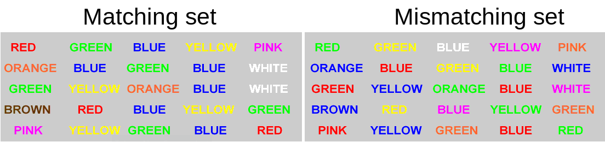

5: Foundations of Inference
This reading:
- How do we quantify uncertainty due to sampling?
- How can we make decisions (what to believe/how to act, etc) that take uncertainty into account?
- How likely are we to make the wrong decision?
We use statistics primarily to estimate parameters in a population. Whether we are polling people to make predictions about the proportion of people who will vote for a certain party in the next election, or conducting a medical trial and assessing the change in blood pressure for patients given drug X vs those given a placebo in order to decide whether to put the drug into circulation in health service.
We have seen this already last week: We observed a sample of peoples’ life satisfaction ratings (scale 0-100), and we wanted to use these to make some statement about the wider population, such as “the average life-satisfaction rating is ?? out of 100”. So we use the mean of our sample, as an estimate of the mean of the population.
Uncertainty due to sampling
A sample estimate is not going to be spot-on. By taking measurements on only a subset of the population that we are interested in, we introduce sampling variability - we have uncertainty in the accuracy of our estimate. We saw previously (Chapter 4) how to make a confidence interval as a means of capturing this uncertainty, providing a range of plausible values.
Let’s look at this with a different example.
Stroop Data
The data we are going to use here come from an experiment using one of the best known tasks in psychology, the “Stroop task”.
In our dataset, we have information from 131 participants who completed an online task in which they saw two sets of coloured words. Participants spoke out loud the colour of each word, and timed how long it took to complete each set. In the one set of words, the words matched the colours they were presented in (e.g., word “blue” was coloured blue). In the other set of words, the words mismatched the colours (e.g., the word “blue” was coloured red (see Figure 1). The order of matching/mismatching sets was randomly allocated for each participant. Participants’ recorded their times for each set (matching and mismatching).1
The data are available at https://uoepsy.github.io/data/stroop.csv.
First, we read in the data and take a look at it. We should note how many rows (130), how many columns (4), and so on.
library(tidyverse)
stroopdata <- read_csv("https://uoepsy.github.io/data/stroop.csv")
head(stroopdata)# A tibble: 6 × 4
id age matching mismatching
<dbl> <dbl> <dbl> <dbl>
1 1 41 22.3 16.9
2 2 24 22.3 19.1
3 3 40 15.4 13.6
4 4 46 9.9 15.0
5 5 36 14.2 16.4
6 6 29 19.9 18.0What we are interested in is the differences between the matching and mismatching times. For someone who took 10 seconds for the matching set, and 30 seconds for the mismatching set, we want to record their score as a difference of 20 seconds.
So we can add this as a new variable to our data:
Code
stroopdata <-
stroopdata |>
mutate(
diff = mismatching - matching
)
head(stroopdata) # take a look to check it works# A tibble: 6 × 5
id age matching mismatching diff
<dbl> <dbl> <dbl> <dbl> <dbl>
1 1 41 22.3 16.9 -5.4
2 2 24 22.3 19.1 -3.2
3 3 40 15.4 13.6 -1.81
4 4 46 9.9 15.0 5.14
5 5 36 14.2 16.4 2.18
6 6 29 19.9 18.0 -1.90What we’re interested in is the distribution of these difference-scores. Are people, on average, slower? This would correspond to a positive value of the diff variable. Let’s get some summary statistics and a visualisation of out observed distribution.
Code
# mean(stroopdata$diff) and sd(stroopdata$diff) work just as well
stroopdata |>
summarise(
meandiff = mean(diff),
sddiff = sd(diff)
)# A tibble: 1 × 2
meandiff sddiff
<dbl> <dbl>
1 2.40 5.02Code
ggplot(stroopdata, aes(x = diff)) +
geom_histogram()
What we’re really interested in talking about is the average ‘mismatching - matching’ score for everybody, not just our sample of 131. But we only have those 131 people, so we’ll have to make do and use their data to provide us with an estimate.
Our estimate is that people are 2.4 seconds slower, on average, when reading mismatched colour words than reading matched colour words.
Remember that there are many many different samples of \(n=131\) that we might have taken. And if we had taken a different sample, then our mean ‘mismatching - matching’ score (the mean(stroopdata$diff) value) would be different.
Previously we learned about how the distribution of all possible sample means we might take is known as a sampling distribution. We also learned that these tend to be normally distributed (regardless of the underlying population distribution) and so we can use the standard deviation of the sampling distribution (known as the standard error) to quantify the variation due to sampling.
To actually get at the standard error, one of our options is to simulate the act of ‘taking many samples of size \(n\)’ by taking lots of samples with replacement from our original sample (this is known as “bootstrapping”).
As our analyses become more advanced, then this will become more complex. In this example, because we are just interested in estimating a single mean value, we can use replicate to do calculate the means from 1000 resamples from our original sample. We can then simply calculate the standard deviation of all these means:
stroop_bootstrapdist <-
replicate(1000, mean(sample(stroopdata$diff, size = 131, replace = TRUE)))
sd(stroop_bootstrapdist)[1] 0.461199Alternatively (and more conventionally), we use a formula of \(\frac{\sigma}{\sqrt{n}}\), which we can calculate much more easily.
The symbol “\(\sigma\)” is the standard deviation of the population, but we are going to approximate this with “\(s\)”, the standard deviation of our sample. The “\(n\)” is the size of our sample:
stroopdata |>
summarise(
s = sd(diff), # standard deviation of sample
n = n(), # number of sample
SE = s/sqrt(n) # standard error of mean
)# A tibble: 1 × 3
s n SE
<dbl> <int> <dbl>
1 5.02 131 0.438What the standard error gives us is an idea of how much uncertainty there is going to be in our estimated mean from our sample of this size:
This enables us to, for instance, construct a range of plausible values for our estimated ‘mismatching - matching’ score. The range is centered around our point estimate (the mean score in our sample), and we widen it to include X% of the possible means we might also see from a sample of the same size. This is achieved by multiplying the standard error by a value that corresponds to our confidence level.
\[ \begin{align} \text{95\% CI} & \qquad = \bar{x} \pm 1.96 \times SE & \\ & \qquad = 2.40 \pm 1.96 \times 0.438 \\ & \qquad = 2.40 \pm 0.858 \\ & \qquad = [1.542, 3.258] \\ \end{align} \] The 1.96 used here comes from our rules-of-thumb about the normal distribution (see Chapter 4 #normal-distributions): 95% of the data fall within 1.96 standard deviations of the mean:2
qnorm(c(0.025, 0.975))[1] -1.959964 1.959964Null Hypothesis Significance Testing (NHST)
Let’s suppose we are interested in asking a question.
is there an effect of the mismatching/matching colour-words?
Our objective here has changed slightly: rather than being concerned with parameter estimation (“what is the estimated score”), our question is now about making a statement about two competing hypotheses:
- \(H_0 \,\, (\text{The Null Hypothesis}):\) There is no difference between matching and mismatching conditions.
- \(H_1 \,\, (\text{The Alternative Hypothesis}):\) There is some difference between matching and mismatching conditions.
If we use \(\mu\) to denote the average ‘mismatching - matching’ score in the population, then we can state these as:
- \(H_0: \mu = 0\).
- \(H_1: \mu \neq 0\).
With the confidence interval that we have created above, we can already make a statement about these. Our 95% CI does not contain zero, meaning that we can, with that same level of confidence, reject \(H_0\).
However, there are instances where it is not feasible for us to create a confidence interval.3 This is where the other primary tool for null hypothesis significance testing comes in, the p-value.
Test-statistics & p-values
The p-value is a formal way of testing a statistic against a null hypothesis. To introduce the p-value, instead of thinking first about what we have observed in our sample, we need to think about what we would expect to observe if our null hypothesis is true.
With our Stroop Task example, our null hypothesis is that there is no difference between matching and mismatching conditions (\(H_0: \mu = 0\)). Under \(H_0\), the average ‘mismatching-matching’ score in the population is zero, and we would expect most of the samples we might take to have a mean score of close to this (not exactly 0, but centered around 0). We saw above that we could express the sampling distribution of means taken from samples of size \(n=131\) using the standard error. Under \(H_0\) we would expect the samples of \(n=131\) we might take to have means that follow something like the distribution in Figure 3. We can think of this as the sampling distribution of \(\bar{x}\), but centered on our null hypothesis (in this case, \(\mu = 0\)). We call this the ‘null distribution’.
Test-statistic
The first step now is to create a test-statistic. That is, a statistic that tell us, in some standardised units, how big our observed effect is from the null hypothesis (i.e. in this case, how far from \(\mu=0\) our sample mean is).
The straightforward way to do this is to express how far away from \(\mu=0\) our sample mean is in terms of standard errors. We’ll call our test statistic \(Z\):
\[ Z = \frac{\text{estimate}-\text{null}}{SE} \]
Our mean and standard error are:
mean(stroopdata$diff)[1] 2.402977sd(stroopdata$diff) / sqrt(nrow(stroopdata))[1] 0.4382302So our test-statistic is \[ Z = \frac{2.40 - 0}{0.438} = 5.479 \]
p-value
We can now calculate how likely it is to see values at least as extreme as our observed test-statistic, if the null is true.
If the null hypothesis is true (there was no ‘mismatching-matching’ difference) then we would expect Z-statistics to be normally distributed with a mean of 0 and a standard deviation of 1.
We have seen the process of how we might calculate a probability from a distribution like this already: the pnorm() function gives us the area of a distribution to the one side of a given value:
pnorm(??, mean = 0, sd = 1, lower.tail = FALSE)Remember, our Z-statistic we calculated above is 5.479. If the null hypothesis were true then the probability that we would see a sample (\(n=131\)) with a Z-statistic at least that large is:
pnorm(5.479, lower.tail = FALSE)[1] 2.138682e-08which is R’s way of printing 0.00000002138682.
There is one last thing, and that the direction of our hypotheses. Recall from earlier that we stated \(H_0: \mu = 0\) and \(H_1: \mu \neq 0\). This means that we are interested in the probability of getting results this far away from 0 in either direction.
We are interested in both tails:
2 * pnorm(5.479, lower.tail = FALSE)[1] 4.277364e-08or \(p =\) 0.00000004277364.
p-value
The p-value is the probability4 that we observe a test statistic at least as extreme as the one we observed, assuming the null hypothesis \(H_0\) to be true.
Making Decisions
Now that we have our p-value of 0.00000004277364, we need to use it to make a decision about our hypotheses.
Typically, we pre-specify the probability level at which we will consider results to be so unlikely to have arisen from the null distribution that we will take them as evidence to reject the null hypothesis. This pre-specified level is commonly referred to as \(\alpha\) (“alpha”). Setting \(\alpha = 0.05\) means that we will reject \(H_0\) when we get a result which is extreme enough to only occur 0.05 (5%) of the time or less if the \(H_0\) is true.
In our case, 0.00000004277364 \(< 0.05\), so we reject the null hypothesis that there is no difference in the mismatching/matching conditions of the Stroop Task.
There’s a lot of convention to how we talk about NHST, but the typical process is as follows:
- Clearly specify the null and alternative hypotheses.
- Specify \(\alpha\)
- Calculate statistic
- Compute p-value
- If \(p<\alpha\), then reject the null hypothesis.
- If \(p\geq\alpha\), then fail to reject* the null hypothesis.
*Note, we don’t “accept” anything, we just “reject” or “fail to reject” the null hypothesis. Think of it like a criminal court, and we are trying the null hypothesis - \(H_0\) is “innocent until proven guilty”.
Making Mistakes
Whether our eventual decision is a) reject the null hypothesis, or b) fail to reject the null hypothesis, there’s always a chance that we might be making a mistake. There are actually two different types of mistakes we might make. An often used analogy (Figure 6) is the idea of criminal trials in which an innocent person can be wrongfully convicted, or a guilty person can be set free.
We can actually quantify the chance that we’re making errors in our different decisions. Thinking back to the definition of a p-value, it is the probability of seeing our results if the null hypothesis is true. If we make a decision to reject the null hypothesis based on whether \(p<\alpha\), then the probability that this decision is a mistake is \(\alpha\).
The probability that we the other sort of error (failing to reject the null hypothesis when the null hypothesis is actually false), we denote with \(\beta\).
Doing statistics is partly a matter of balancing these possibilities. If we used a very low \(\alpha\)-level (e.g. we reject when \(p<.0001\) rather than \(p<.05\)) then we increase the probability of making a type II error.
Types of Errors in NHST
Power (\(1-\beta\))
A key notion in conducting studies is “statistical power”. Studies want to increase the probability of correctly rejecting the null hypothesis (i.e. correctly identifying that there is something more than chance going on).
This is the bottom right cell of the tables in Figure 6 and Figure 7. We know that this will depend on the \(\alpha\)-level that we choose, but there are other important factors that influence \(1-\beta\):
- power increases as sample size increases
- e.g. it’s easier to determine that cats weigh less than dogs if we measure 100 animals vs if we measure only 10 animals
- power increases the farther away the true value is from the null hypothesis value
- e.g. it’s easier to determine that cats weigh less than elephants than it is to determine that cats weigh less than dogs
Footnotes
You can try out the experiment at https://faculty.washington.edu/chudler/java/ready.html↩︎
For other intervals, such as a 90% interval, we need to know the point at which 5% is either side of a normal distribution (i.e., giving us the middle 90%).
qnorm(c(0.05,0.95))will give us 1.64, which we then put into our construction of the interval: \(90\%\, CI = \bar{x} \pm 1.64 \times SE\).↩︎Think about an example where our question is about whether there is a difference in variable \(Y\) between groups A, B, C and D. Around what should we construct our interval? Around the difference \(\bar{Y}_A - \bar{Y}_B\) (difference between A and B’s average scores on \(Y\)), or \(\bar{Y}_A - \bar{Y}_C\), or \(\bar{Y}_B - \bar{Y}_D\)?↩︎
What we have been seeing is that probabilities in NHST are defined as the relative frequency of an event over many trials (as “many” \(\to \infty\)). This requires assuming some features of the data generating process which guides what the “many trials” would look like (e.g., that there is no effect). The \(p\)-value is the probability of observing results as or more extreme than the data, if the data were really generated by a hypothesised chance process.↩︎